Seventeen houses, and how their garages open
Every door here was measured, drawn, built and finished in Santa Ana. Filter by how it opens.
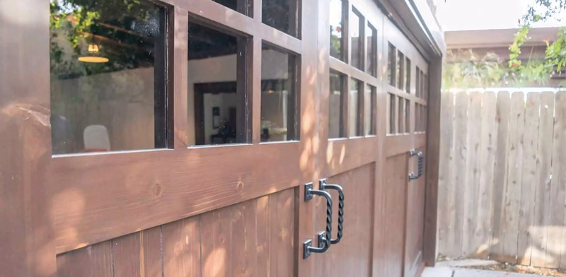
LemonFour-panel bifold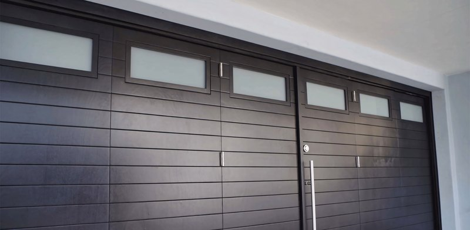
LyndonModern bifold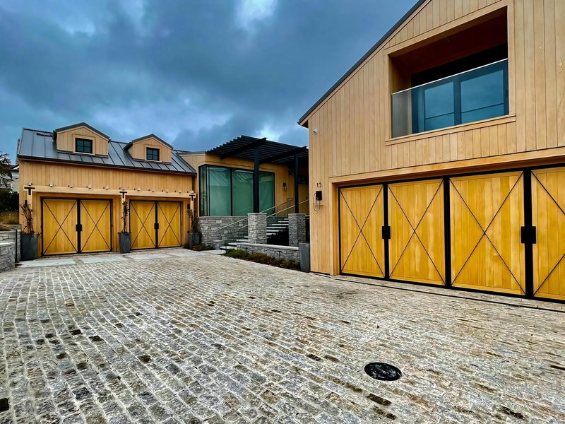
The StrandThree automated bifold sets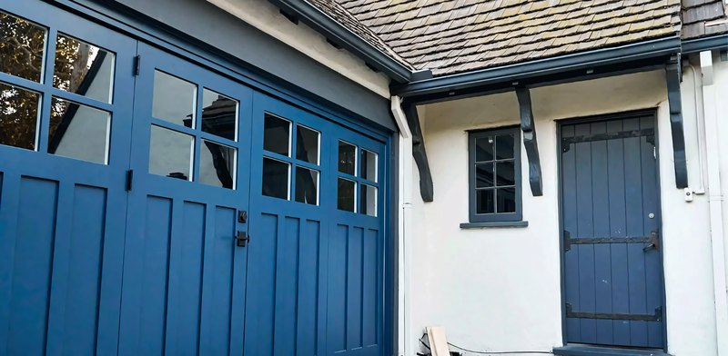
La MesaFive-panel accordion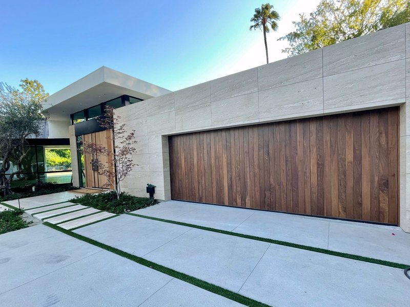
Walnut bifoldFour-panel bifold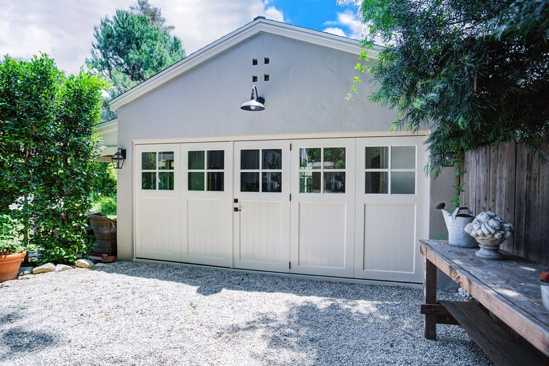
WellingtonPainted carriage pair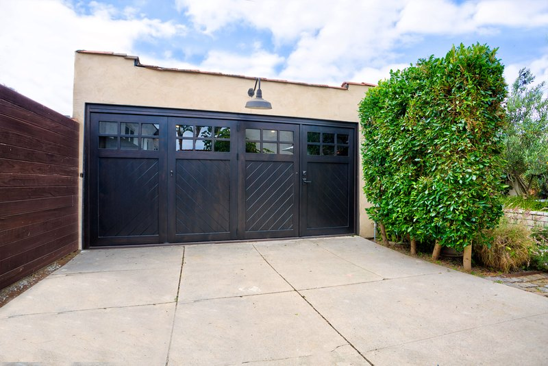
Hyde ParkChevron carriage pair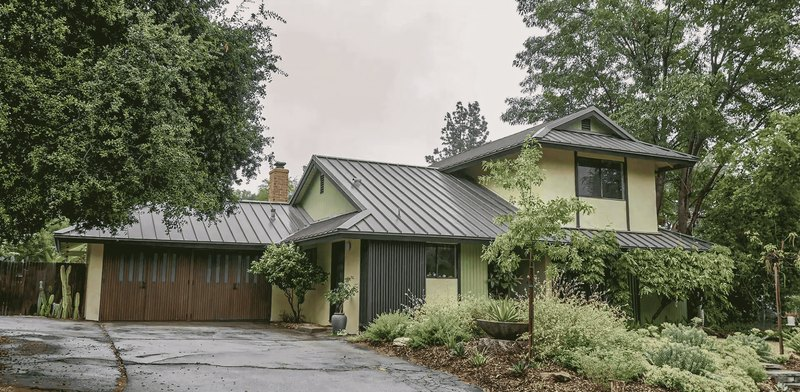
AlzadaFour swing-out carriage doors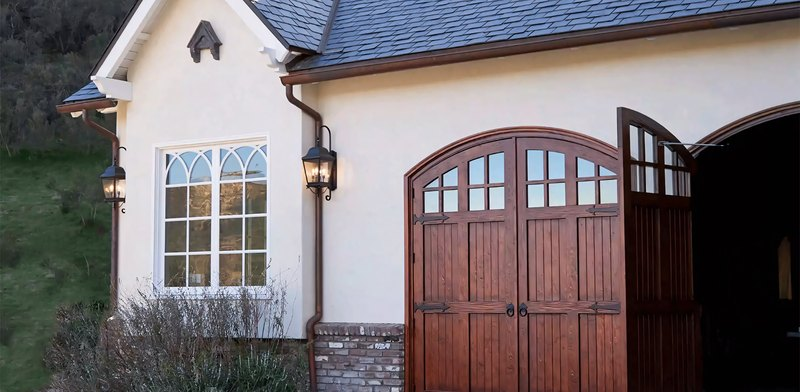
Wagon WheelArched carriage doors BoleroModern garage door
BoleroModern garage door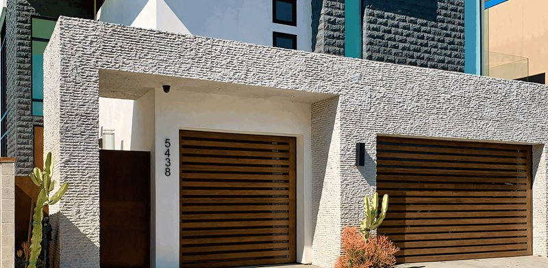
NaplesFull-length glass sectional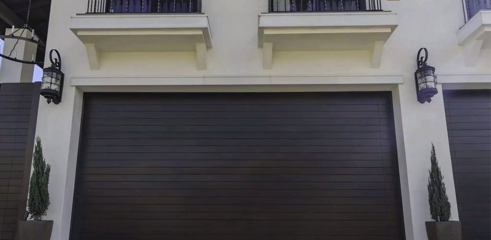
Morning StarModern garage doors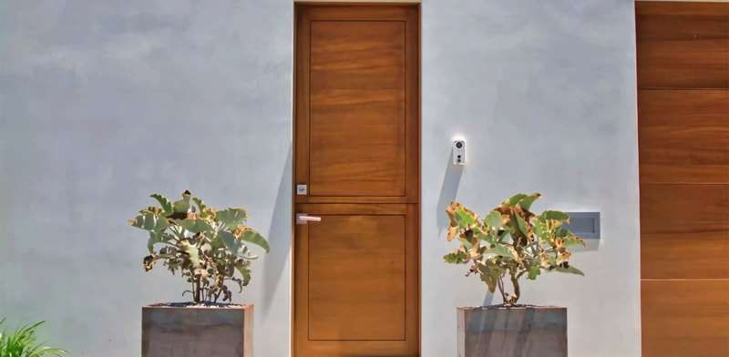
LidoPivot entry door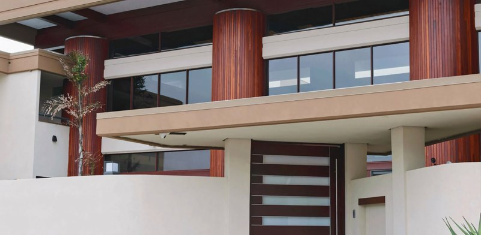
Rocky PointEntry door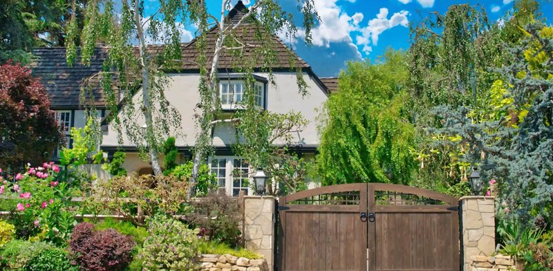
BrentwoodDriveway gate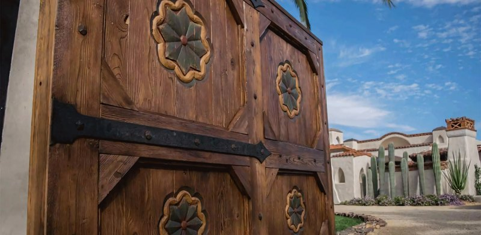
Via de FortunaMediterranean doors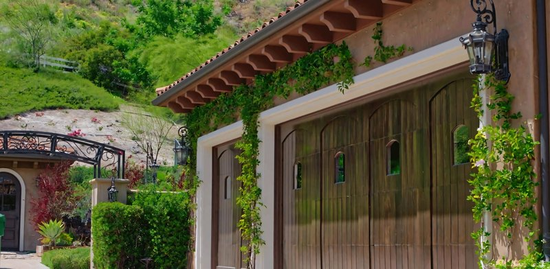
SandalwoodMediterranean garage door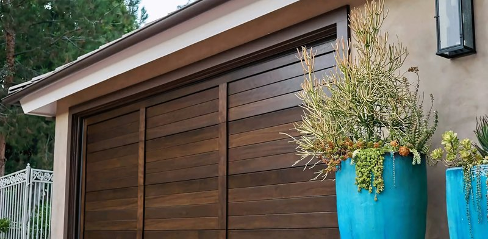
NorthModern garage door